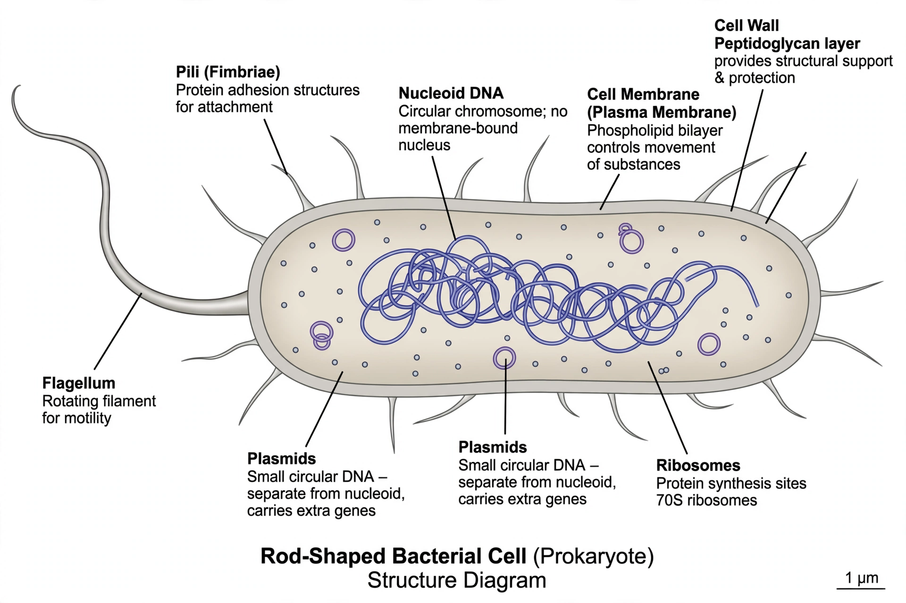

Prokaryote
From Wikipedia, the free encyclopedia
A prokaryote is a single-celled organism that lacks a membrane-bound nucleus and other membrane-bound organelles. Prokaryotes belong to the domains Bacteria and Archaea, and were the first forms of life on Earth, appearing roughly four billion years ago. Their DNA typically sits in a region called the nucleoid, often as a single circular chromosome.

[Image: Structure of a typical prokaryotic (bacterial) cell]
Structure
Prokaryotic cells are usually 0.5–5 micrometres across. They have a plasma membrane, usually a Cell wall, sometimes an outer capsule or slime layer, and appendages such as flagella and pili. Inside, the cytoplasm contains ribosomes (70S, smaller than eukaryotic 80S) and often small circular DNA molecules called plasmids. Many carry out Photosynthesis or chemosynthesis; others are heterotrophs.
Reproduction and gene exchange
Prokaryotes reproduce asexually by binary fission, but they also exchange genes horizontally by conjugation (direct transfer), transformation (uptake of free DNA) and transduction (transfer by viruses) — one reason antibiotic resistance spreads quickly among bacteria.
Importance
Prokaryotes drive global cycles of carbon and nitrogen, form much of the biomass of the oceans, live in and on the human body as the microbiome, and cause many infectious diseases, while also being workhorses of Biotechnology and industry.